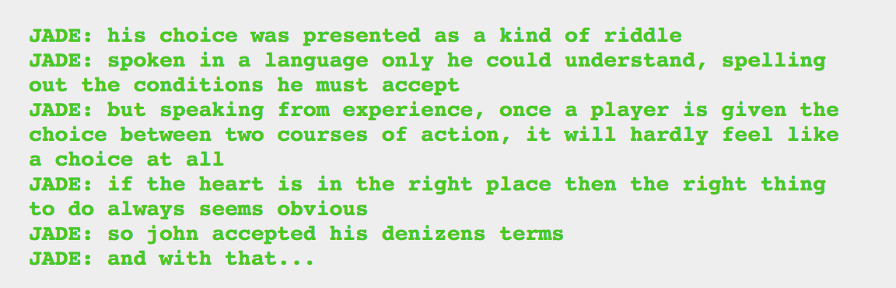
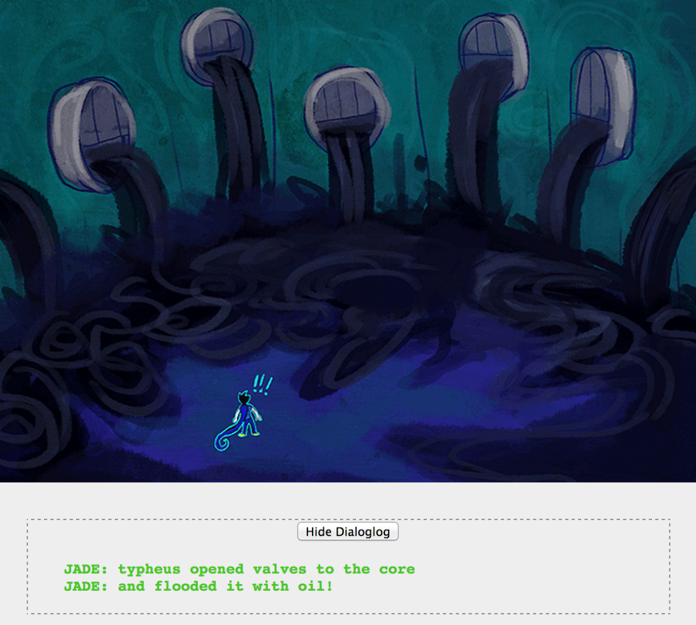
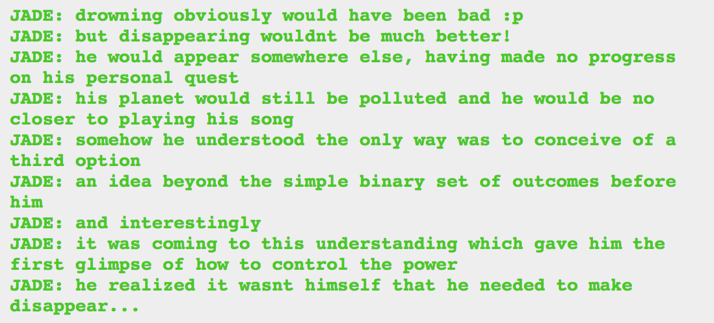

So assuming that most denizen choices go along the lines of martyr or tyrant choices, is choosing a do or die option considered the martyr choice?
Probably more likely that martyr/tyrant is a master class choice most often, but honestly I am so bummed that we don’t get to know what his options are. Or see his interaction with Typheus at all. I’m just still dying to know more about denizens, y'know? And I’m worried we’ll never know, because keeping ambiguity is a good storytelling choice.
Think it’s significant that Jade said the right choice “seems obvious” rather than is obvious?

If Jade hadn’t said outright that the decision came before this I would assume that teleporting himself or teleporting the oil was the choice he made. Then again, John did basically decide to pollute the entire past to clean his planet and save himself.
I love the Matrix reference though!